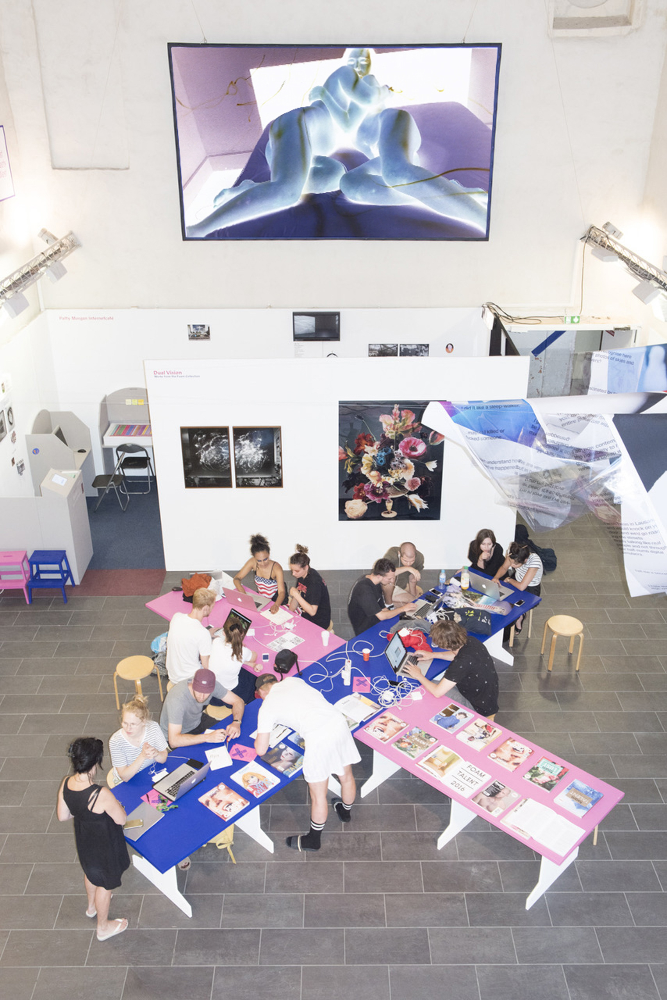
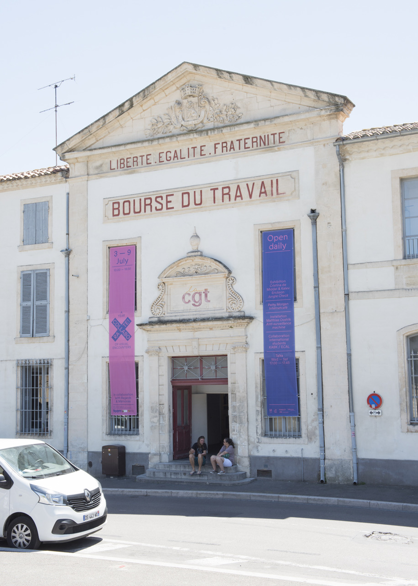
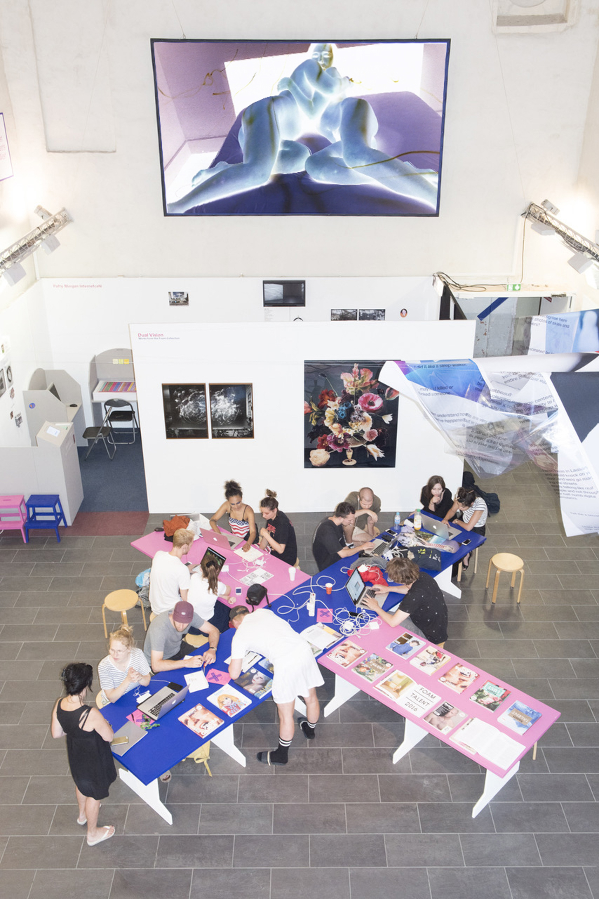
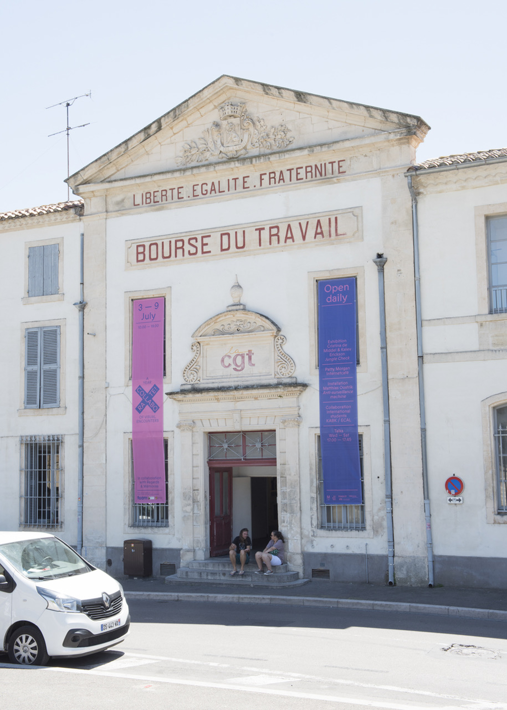
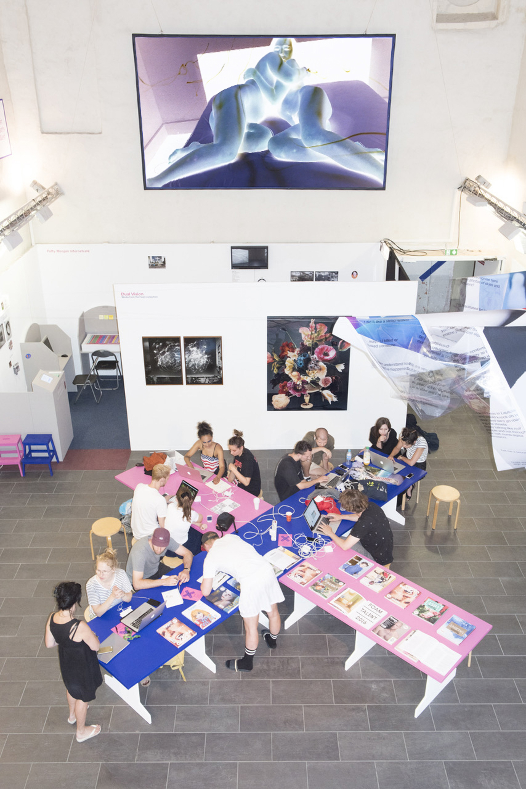
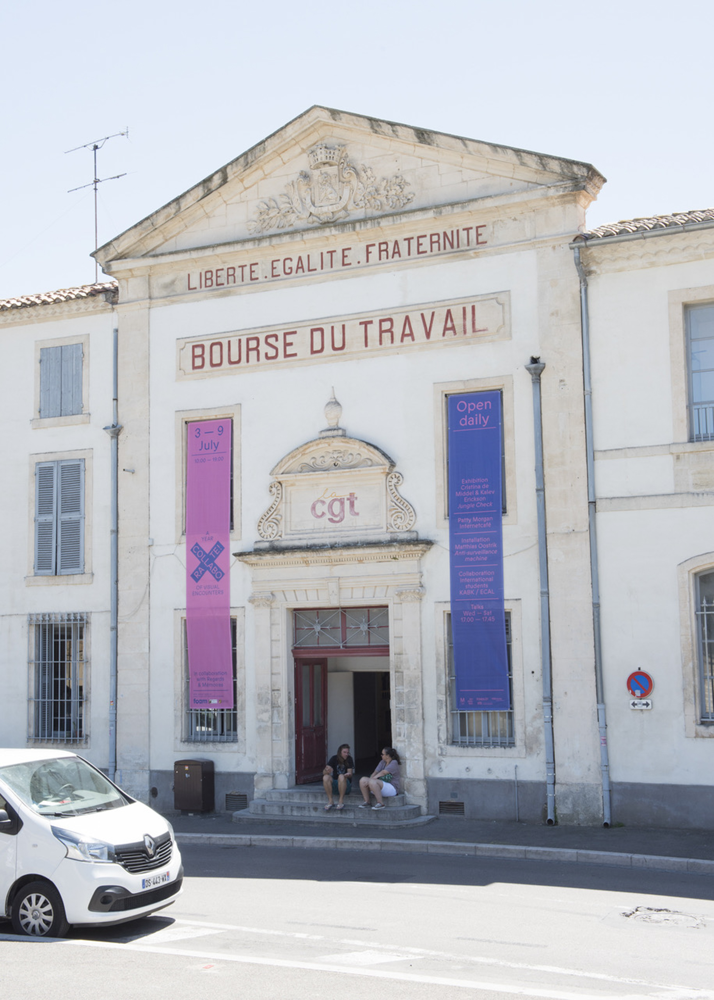

Documentation
 



Whether pleasant or unsettling, our memories represent a uniquely personal combination of our past experiences, thoughts and feelings. Viktor Naumovski & Remy Ugarte Vallejos chose this intimate and unsettling territory as the starting point for their collaboration – despite having never met. After a process of confronting and merging their personal histories, a body of work portraying a fictional shared memory emerged, encompassing film, photography and sculpture. The project attempts to visualize the emotional state between dream and reality, imagination and remembrance, raising questions as to how our view of the past is constructed.

